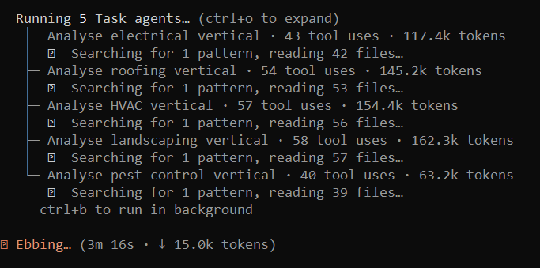

Targeted Tools
Single-purpose tools built fast to solve specific problems. No build step, no framework overhead — Bootstrap, CDNs, vanilla JS, ship it.
Prompt Editor
Browser-based prompt refinement tool. Two-column layout with selection-based commenting, persistent local storage, one-click export. Built for iterative prompt engineering.
reprompt.pro →
Rental Yield Calculator
Models optimal rental asking price by calculating let probability, void periods, and net income across configurable time horizons. Financial modelling in the browser.
reprompt.pro/rental-price-calculator →
Rental yield calculator — single-prompt tool, no build step, real financial modelling
Lead Generation Pipeline
110+ PHP CLI scripts: data ingestion (Apify, LinkedIn, Indeed), company normalization, AI-powered classification, lead magnet PDF generation, email verification, cold email generation, export to Instantly.ai.

Fan-out across the lead gen pipeline — 5 parallel subagents analysing different industry verticals simultaneously
- Usually a single prompt with some polishing
- Off-the-shelf: Bootstrap, CDNs, no build, no fuss
- For CLI tools: pragmatic PHP, Composer libraries as needed
- Claude headless mode for scripts that need AI inference — 189 automated sessions in the recorded window alone